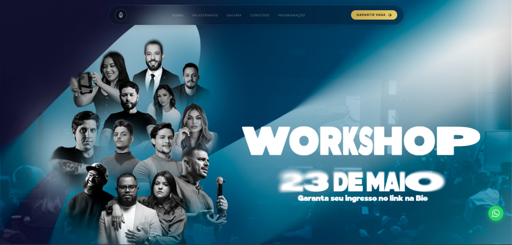
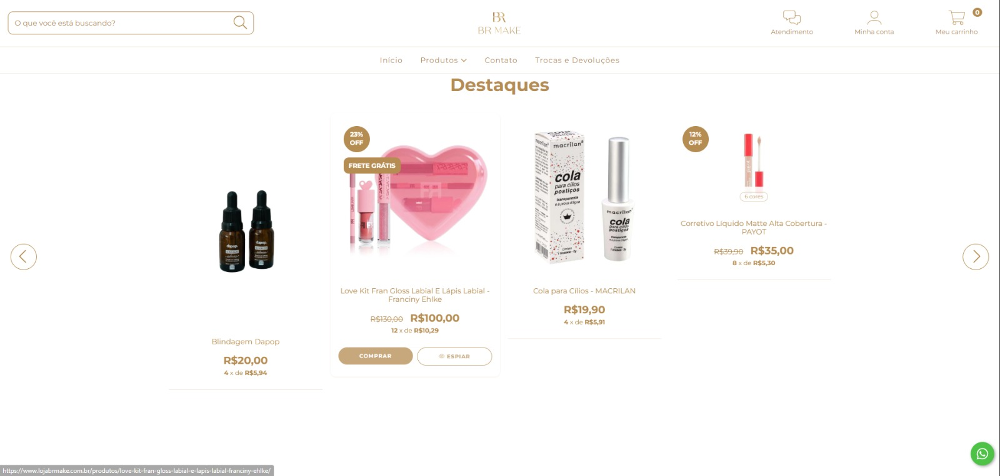
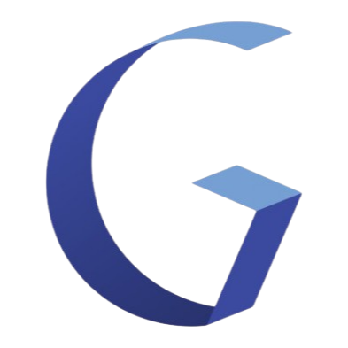

01 / 04
Site de Evento
Workshop Mídia Comunica, 23 de Maio em Alphaville
Mídia Comunica · 2025
Veja os sites que já estão no ar e escolha o tamanho que combina com o seu negócio. Preço fechado, sem mensalidade.


Quando alguém quer resolver alguma coisa, a primeira parada é o Google. Se a sua empresa não tem onde ser encontrada ali, ela some da conta bem antes de o cliente escolher com quem gastar.
Talvez você ainda não tenha site. Talvez tenha um que ninguém visita, feito às pressas anos atrás e que hoje você nem manda pros clientes. Dá no mesmo: quem procurou hoje encontrou outro e fechou com ele.
É isso que a gente faz aqui, e só isso. Site sob medida, feito do zero pro seu negócio, rápido no celular e montado pra ser achado no Google. Preço fechado, sem mensalidade.


São quatro etapas, e a ordem importa. A maior parte dos sites que dão errado pula a primeira e começa escolhendo cor.
Ninguém começa um site pelo layout. Primeiro a gente descobre o que o seu cliente digita, o que ele precisa ver pra confiar e qual página fecha a venda. O desenho vem depois disso.
Site bonito que ninguém encontra é cartão de visita caro. O seu nasce com estrutura de busca, Google Meu Negócio ligado e as páginas na forma que o Google entende.
Nada de tema pronto com a sua logo em cima. Cada página é montada do zero, abre rápido no celular ruim e no 4G fraco, e continua funcionando quando o seu negócio muda.
No ar não é o fim. Você recebe o site medido, sabendo de onde vem cada contato, e com quem chamar quando precisar mudar um preço, um texto ou uma foto.
Os sites que passaram ali em cima estão no ar agora, rodando para clientes da casa. É esse tipo de projeto que sai daqui. Você paga uma vez, o site é seu, e ninguém te cobra aluguel pra ele continuar existindo.
Pagamento único pelo site. Nada de aluguel mensal pra página continuar existindo.
Você recebe o escopo e o preço por escrito, sem compromisso de contratar.
Domínio e arquivos ficam no seu nome. Você não fica preso à gente pra continuar no ar.
Advocacia não precisa do mesmo site que barbearia. Nada de tema pronto reaproveitado.
Precisava montar toda a estrutura online do meu workshop do zero. O Kaique entendeu o que eu precisava e cuidou de tudo. Hoje vendo minhas turmas sem correr atrás.

GraficonEu não entendia nada de anúncio e tinha medo de jogar dinheiro fora. O Kaique explicou tudo desde o início, e hoje a gente recebe pedido de orçamento quase todo dia.
A gente precisava de um site que representasse o espaço de verdade. Veio muito além do que eu esperava, e passa exatamente a imagem que a gente quer.
Minha loja dependia demais de indicação. Desde que comecei com a Conect+, chega cliente novo todo mês e o faturamento ficou muito mais previsível.
Conta o que o seu negócio faz e o que você precisa. Devolvo o escopo e o preço por escrito, sem compromisso.
O Kaique vai olhar a sua conta e te chamar no WhatsApp em até 24 horas nos dias úteis. Se preferir adiantar, pode chamar agora.
Chamar no WhatsApp